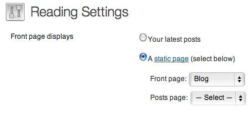

WORKALITY PREMIUM DOCUMENTATION
Last update : May 25, 2013
1 - INSTALLATION
To install your theme, you should upload and activate it.
You may prefer one of the followings :
- WordPress Upload : Navigate to Appearance » Themes » Install Themes. Click Upload button and select the your theme’s zip file and click to Install Now button. Once the installation done, it will be displayed in available themes under the Appearance » Themes. Now you’re able to activate your theme.
- FTP Upload : First, unzip the downloaded zip file. Then, you should upload the unzipped theme directory into the your wordpress theme directory wp-content/themes via your popular ftp client like Filezilla which is free and multiOS supported.
Note : If you’re getting any kind of permission error with WordPress Upload because of your hosting settings, keep it mind to try FTP Upload for the best results.
If you need any further information about installing themes you might check :
http://codex.wordpress.org/Installing_WordPress
Download Filezilla :
http://filezilla-project.org
2 - PAGE TEMPLATES
Page Templates allow you to display different type of contents.
Templates can be selected from Page Attributes when creating a new page via Pages » Add New.
Your theme comes with 4 different page templates :
- Default Template
This is wordpress default page template which gives you 2 column default layout ; page content and widgets. It is useful if you want to create a page with widgets sidebar on the right column.
- Blog
Blog template allows you to display your blog content which has created via Posts. Blog template comes with 2 column layout as well as default template. However, widget sidebar can be disabled via Theme Options to display blog as full width.
- Full Width
This is your default full width template. No widget sidebar.
- Custom Post Type
Custom Post Type shows the custom post types which you’ve created via Reframe > Custom Post Types. Once you picked Custom Post Type template, “Select Custom Post Type” section will appear below and you’ll be able to pick the custom post type will be displayed on this page.
- Archive
Archive template works as a summary page which displays recent 25 blog posts, archive by month, archive by categories and page content.
3 - CUSTOM POST TYPE GENERATOR
Custom Post Type Generator allows you to create your own post types. Northeme Framework comes with Works custom post type by default.
To create or modify custom post types, navigate Reframe > Custom Post Type Generator. Once you’ve created a new Post Type, a new menu will be shown below Posts menu with Post Type’s name.
IMPORTANT : Custom Post Type and Taxonomy names must be changed carefully once it’s set. For instance, if you have a Post Type which is called “Works”, all posts you’ve created for Works will be binded to ‘works’ custom post type. If you edit custom post type name as ‘my-works’, your all posts will disappear. Therefore, it’s not recommended to alter specific custom post type settings in Step 2 & 3 if you’ve already created posts for t.
Create New Post Type button will create a new Post Type and allows you to set following settings :
Step 1
- Thumbnail Type
Pick your thumbnail size : Small, Medium, Large, Portrait
- Wrap Title and Excerpt in Project Overview Page
Allows you to display project title and excerpt inside a colored box in post overview page
- Post Display Limit
Reframe is using infinite scroll for pagination. You can set pagination limit through this option.
- Order By
Posts are ordered by date by default. But if you want to re-order your posts, you might select Custom Ordering option and re-order your posts via Reframe > Posts Ordering.
- Display Category Filters as a Dropdown Menu
This option allows you to display categories in a dropdown menu instead of listing all the links in header.
- Hide Side Margins in Single Post Page
Allows you to remove the side margins on single post pages. Useful if you prefer to use transparent background
- Hide Project Info Bar
Allows you to remove project info bar in single post pages (Categories, Client, Project Date, Completion Date).
- Thumbnail Captions
Hide/show title, excerpt, category, date of posts in overview page.
- Thumbnail Rollover
On hover position, thumbnail images covered by faded white background. This option allows you to change its color or disable it.
Step 2
- Post Type Name
This value will be your post name. Since this value will be used only for WordPress and it won’t be displayed on your page or address bar, it’s recommended to use simple and unique names. Also the page you will create for this custom post type should NOT have same slug with this value.
It MUST contain lowercase only letters, numbers and dash(-). E.g. my-works, photo-projects, inspirations .
- Singular Post Name
Define your singular post name : Project
- Plural Post Name
Define your plural post name : Projects
- Slug
Allows you to set your post type URL. It MUST contain lowercase only letters, numbers and dash(-). E.g. projects – your URLs will be displayed like /projects/my-post-title
Step 3
- Category Name
Category name of your post type. E.g. Creative Fields
- New Category Title
Add new category form title. E. g. Add New Category
- Single Category Name
Singular category name. E.g. Category
- Category Slug
Allows you to set your category URL. It MUST contain lowercase only letters, numbers and dash(-). E.g. project-categories - your URLs will be displayed like /project-categories/my-post-title
4 - SETTING UP YOUR HOMEPAGE
Once you’ve created your pages, you are ready to set your homepage as you wish.
To set your homepage navigate to Settings » Reading. Then you’ll see Front page displays options.
By default, Your latests posts option is selected.

Front page displays options allows you to set any page as your homepage (blog, works, about, contact etc.).
To change your homepage, select A static page option and pick the page you want to display as homepage from Front page selectbox, then hit the save changes button. Also please note that, your page name might be different from referred names above.
* To learn more about creating pages, please read Building Your Website section.
5 - CREATING MENU
Your theme supports WordPress Custom Menus which allows you to create your own menu content.
Navigate to Appearance » Menu and click the “+” button and create your own menu.
Your theme has one menu and can be set from Theme Locations section.It has two layers, which means you’re able to create submenus for your main menu links. Your menu content will also be used as your mobile menu content.
For more information about custom menus, check out the following link :
http://codex.wordpress.org/Appearance_Menus_SubPanel
6 - QUICKSLIDE
Quickslide allows you to load pages dynamically and display the content below top menu with slide animation. You can simply create a quickslide link for any page thanks to custom WordPress menus. All contents will be displayed without height limitations.
To use a page as quickslide you need to follow these steps :
- 1 – Your page slug : Page slug is URL path of that page which is displayed as “Permalink” below the title. In order to create a quickslide menu you need to know slug name of related page. In this example it is contact :
- 2 – Create Custom Menu :Navigate to Appearance » Menus. All you need is enter your page slug with “#quickslide_” prefix in Custom Links section and give it a label as you wish. Following example uses contact slug, which means we should enter #quickslide_contact as URL.
Hit the “Add to Menu” button and you’re done!
Please note that, Quickslide is a feature that works with javascript. Which means if user’s javascript is disabled quickslides won’t work.
7 - CREATING YOUR PORTFOLIO
Since Workality V2, Works post type is improved with Custom Post Types feature in order to create your own post types. Even though Works is used in the following examples, you can build your content with the same way for all custom post types you’ll create.
A – Creative Fields
Works menu is placed under the Posts menu in the admin panel menu.
Before adding a new project, you should navigate to Creative Fields menu to add a new field.
Creative fields are categories of your works.
Creating your creative fields is highly recommended step in order to filter your projects on Works page.
B – Add New Project
Once you’ve added your creative fields, navigate to Works » Add New.
Then, you’ll notice the following custom fields which allow you to add your project details :
- Title
Your project title
- Content
Your project description. If you don’t want to display the project description, you may choose to leave it as blank.
- Creative Fields
Your creative fields are listed here. You can choose field(s) of your project and also are able to create new ones with +Add Creative Field button.
- Featured Image
Thumbnail image of your project. Workality uses 4 different thumbnail types :
Small : 220x170px
Medium : 300x100px
Big : 460x350px
Portrait : 300x420px
Thumbnail type can be set via Theme Options. Recommended image size for upload is at least 470x470px to make all types available. Uploaded images will be automatically cropped for the thumbnail types above.
Note : Workality uses responsive layout. In mobile screen width, all thumbnails will be automatically replaced with Large thumbnails regardless to your default thumbnail type. 470x470px refers to minimum 470px width. Even though 470px is also recommended as your image height, it might be vary.
Once you’ve uploaded thumbnail image, you MUST click to “Use as featured image” button/link in the WordPress Media Uploader window :
- Images/Videos of Your Project :
This section allows you to add your project assets. You can upload your project images or embed your videos from popular video services like youtube, vimeo, dailymotion.
Images :
Click to Add New Image button to open WordPress Media Uploader and upload/select from library to your image and hit the INSERT INTO POST button.
Please note that; in some cases, Link URL text field might be blank. If it’s blank, make sure to click File URL button before clicking INSERT INTO POST button.

Once you’ve clicked on Insert Into Post button, it will be added to your project images as below.
Also, you’re able to add captions to your images :
Images are displayed as 880px maximum width in your project canvas.
However, if you’ve activated “Remove side margins” option via Theme Options, your image can be displayed with 940px
Smaller images than 880px will be displayed as in their original size and centered on page.
Videos :
Click to Add New Video button to add video embed code which is generated by the video service such as youtube, vimeo, dailymotion.
Embed code dimensions will be ignored and the video will be stretched to your project canvas with preserved aspect ratio.
// Embed Code Example
<iframe src=”http://player.vimeo.com/video/51621640?title=0&byline=0
&color=ffffff” width=”620″ height=”349″ frameborder=”0″
webkitAllowFullScreen mozallowfullscreen allowFullScreen></iframe>
Re-ordering items :
You are able to include unlimited Images/Videos to your project and re-ordering them with simple mouse drag&drop.
Additional Info & Preferences
This section allows you to include details such as Client Name, Project Completion Date and Project URL. These fields are optional and if you leave them as blank, they won’t be displayed in your projects details.
Project Description Positioning
It allows you to position your project description as top or bottom.
Color Settings
Color settings are one of the best features of Workality. You can pick custom colors for your project canvas, title, text, links and borders in order to create exclusive project presentations.Each project can be displayed with its own color scheme.
Excerpt
Excerpts are optional but very helpful project summary fields of WordPress. It gives you full control for the desired description text on your homepage view. These summaries will be displayed below your thumbnails. As default your project description will be shortened to be used as excerpt.Note : Excerpt support is enabled in Workality but if you can’t find excerpt window in your screen, scroll to top and click “Screen Options”. If Excerpt option is not checked in Screen Options, check it to activate.
8 - BUILDING YOUR WEBSITE
Following examples give you tips to create your website :
- Custom Post Types : To create a custom post type page, navigate to Pages » Add New. Enter your page title (E.g. Works).
Then, select Custom Post Type template from Page Attributes. Once you’ve picked Custom Post Type template, Select Custom Post Type section will appear below. Select the custom post type you’ve created and click publish button.
- Blog : To create your blog page navigate to Pages » Add New. Enter your page title (E.g. Blog).
Then, select Blog template from Page Attributes and click publish button. To learn how to add widgets for Blog, check the Sidebars section.
- Default Template : Default templates are useful to create static pages like about, contact etc. The only difference from full page, default page has its own widget sidebar which allows you to display your custom widgets.
- Full-Width Template : Full width template can be used for same purpose as default template. However, it allows you to place your content in full width since it doesn’t have any widget sidebar.
For instance, simply copy&paste following code into your rich text area to create a full width contact page as in theme demo :
[sixteen_col pos="first"]
[md_google_map address="Your Address"]
[/sixteen_col]
[two_third pos="first"]
[md_contact_form myemail="me@example.com"]
[/two_third]
[one_third pos="last"]
Contact Information
Creative Agency
1928 Saint Caterine
H9H 2P9 Montreal,
Canada
Phone : (555) 888-4444
E-mail : johndoe@gmail.com
Twitter : @creative
Facebook : http://www.facebook.com/creative
[/one_third]
Note : The code example above is created with shortcodes features of the Workality Theme.
For more information please check Shortcodes section.
9 - SLIDERS
Workality has different sliders for Blog and each custom post types.
They can be adjusted via Workality » Sliders.
You can add images or embed videos to the sliderss. Also, captions can be added on image slides.
Recommended image size is 940px width with any height. Videos will be resized to fit proportionally regardless to their dimentions.
10 - SIDEBARS
Your theme supports 6 different sidebars :
- Page Sidebar
- Blog Sidebar
- Bottom 1
- Bottom 2
- Bottom 3
- Bottom 4
Blog sidebar is displayed on the right column of blog posts and single blog post pages. However, these can be deactivated from Workality » Posts. It belongs to Blog in page templates.
Page sidebar is displayed on the right column of the pages as well as blog posts. This sidebar belongs to Default Template in page templates.
Bottom 1, Bottom 2, Bottom 3, Bottom 4 are displayed on the footer of your website. These can be disabled or can be set as 1 to 4 columns depending on your needs.
In order to activate these sidebars and add widgets, simply navigate to Appearance » Widgets and drag&drop widgets to these sidebar areas.
11 - SEO
Your themes uses SEO preview panel in order to create custom META tags to optimize your pages and posts for search engines.
Even though your framework has SEO section to create your website’s general META tags, this panel gives you the flexibility to create different meta tags for certain pages.
Each page has following section and it allows you to set your SEO optimization :

Remember ; this is an optional yet important step. However, if custom SEO is not provided, your post/page’s default title and excerpt will be used to create META tags.
12 - SHORTCODES
Shortcodes are code snippets for using exclusive theme elements. Following shortcodes can be used in any page or post.
Google Maps Shortcode
Available attributes :
- address (Required)
Description : Your address
- Zoom (Optional)
Description : Map zoom value. You can give a value between 1 to 19. Default is 14.
- Width (Optional)
Description : Width value of the map. It can be specified as px or %. Default is 100%.
- Height (Original)
Description : Height value of the map. It can be specified as px or %. Default value is 250px
Example :
[md_google_map address=" 5505, St-Laurent blvd, suite 5000 Montreal
Quebec H2T 1S6" zoom="14" width="300px" height="250px"]
Contact Form Shortcode
Available attributes :
- myemail (Required)
Description : Your email address
- title (Optional)
Description : Title of your contact form. Default value is “Contact Form”
- Success (Optional)
Description : The message will be displayed on form has been successfully sent. Default value is “Thank you for your message”
- Failure (Optional)
Description : The message will be displayed on error. Default value is “Please try again”
Example :
[md_contact_form myemail=me@example.com title="My Contact Form"
success="Thank you for your interest!" failure="Something is wrong. Please try again"]
Grid Shortcodes
This theme uses 16 grid responsive layout and comes with 18 shortcodes ready to use.
You can build your pages with following grid shortcodes :
[one_third]
[two_third]
[one_col]
[two_col]
[three_col]
[four_col]
[six_col]
[seven_col]
[eight_col]
[nine_col]
[ten_col]
[eleven_col]
[twelve_col]
[thirteen_col]
[fourteen_col
[fifteen_col]
[sixteen_col]
[row_break]
Note : You must specify the “first” or “last” column in order to prevent collapsing. E.g. [eight_col pos="alpha"]
However, new shortcode adding panel will help you to specify a column as first,last or default easily.
Examples
/// Columns have to be 16 in total, 8+8=16
[eight_col pos="first"]
Eight for here...
[/eight_col]
[eight_col]
Eight for there...
[/eight_col pos="last"]
/// Or 4+12 = 16
[four_col pos="first"]
Four for here...
[/four_col]
[twelve_col pos="last"]
Twelve for there...
[/twelve_col]
How about two_third and one_third?
You’ll notice there are two extra shortcodes as one_third and two_third. These shortcodes allow you to create 3 columns layout :
/// Let's create 2 columns like this documentation
[two_third pos="first"]
This is two_third...
[/two_third]
[one_third pos="last"]
This is one_third...
[/one_third]
/// Let's create 3 columns page
[one_third pos="first"]
This is one_third...
[/one_third]
[one_third]
This is one_third...
[/one_third]
[one_third pos="last"]
This is one_third...
[/one_third]
Occasionly, different column heights might cause to collapse your rows. Row break helps you to prevent collapsing :
/// 2 rows with 3 columns
[row_break]
[one_third pos="first"]
This is two_third...
[/one_third]
[one_third]
This is two_third...
[/one_third]
[one_third pos="last"]
This is one_third...
[/one_third]
[/row_break]
[row_break]
[one_third pos="first"]
This is two_third...
[/one_third]
[one_third]
This is two_third...
[/one_third]
[one_third]
This is one_third...
[/one_third pos="last"]
[/row_break]
Sliders
Available attributes :
- type (Optional)
Description : image or video. Default is image
- url (Optional)
Description : Link of slide.
- target (Optional)
Description : _blank or _self. Give _blank to open link in new window. Default is _self
- caption (Required)
Description : Caption for image. It supports only text.
[sliders]
[slide type="image" url="http://www.google.ca" target="_blank" caption="This is my caption!"]
http://www.example.com/image.jpg
[/slide]
[slide type="video"]
<iframe src="http://player.vimeo.com/video/51325336?title=0&byline=0&"
color=ffffff" width="620" height="349" frameborder="0"
webkitAllowFullScreen mozallowfullscreen allowFullScreen></iframe>
[/slide]
[/sliders]
Buttons
Available attributes :
- url (Required)
Description : Target url
- Name (Required)
Description : This is the text which is shown in your button
- Target (optional)
Description : Specify this value as “_blank” in order to open link in new window. Default value is _self.
- Color (optional)
Description : You have five different colors for buttons : green, blue, orange, red, black. Default is gray.
[button url="http://www.google.com" name="My Button" target="_blank" color="green"]
Icon Shortcodes
Available attributes :
- Name (Required)
Desctiption : This theme uses Glyphicons which is presented by Twitter Bootstrap. You can check all available button codes from table below.
[icon name="remove"]
[icon name="glass"]
Alert Shortcodes
Available attributes :
- Color (Required)
Desctiption : You have four different colors for alerts : green, orange, red, blue
[alert color="red"]Heads up! This is red colored alert![/alert]
Tabs Shortcodes
[tabs]
[tab title="This is sample tab"]
Your content goes here
[/tab]
[tab title="Sample Tab 2"]
Your other content goes here
[/tab]
[/tabs]
13 - THEME FRAMEWORK
Your theme comes with easy to use Theme Framework panel. Navigate to Workality to access Theme Options.
Following sections are located in Theme Options :
- Header
It allows you to adjust the header part of your theme such as your logo, search bar etc.
- Styling
This theme comes with 3 different color presets; Light, Gray, Dark. Also, if you’d like to create your own color scheme, Custom option allows you to make it. Moreover, additional options like border type, background pattern, text shadows can be set here.
- Google Fonts
Header and body fonts can be selected from google fonts list. Also you’re able to use HTML fonts instead of Google Fonts.
- Posts
Your project thumbnail size/type can be set. Also additional post features located here.
- Posts Sharing
Social share buttons can be activated for your posts.
- Sliders
This theme has 2 sliders for works and blog pages. Sliders are disabled by default. If you want to use them enable slider and add you content.
Videos and images are accepted as slider content.
- SEO
These settings allow you to set your website’s title and meta description for better search engine optimization. Also google analytics code can be added if you need.
- Footer
Footer text and footer widgets can be adjusted. Also widget columns can be set as 1 to 4 columns.
- Social Icons
Your social links can be set via related fields. Only social links you’ve set will be displayed in the footer of your website.
- Advanced
This section allows you to add your own CSS styles and Disabling AJAX navigation of Workality.
- Transfer
If you’re planning to move your website, you can get backup of theme options. Also Works is using absolute image URL paths. Once you’ve changed your domain name, it’s very important to update your project image links via this option.
14 - CHILD THEME
Child theme is a great way to customize your theme. Northeme themes come with a child-theme template which helps you to get started to make any advanced customization while you still can update your theme without any concern. Because the best part of working with a child-theme is, your customizations are always preserved.
Once you’ve downloaded the child theme via My Themes section, you’ll able to install it with same method as in installing parent WordPress theme.
Before start to use child theme, please make sure to complete the following adjustments :
- Child themes cannot work without their parent theme. For example, if you want to install Workality child theme, Workality Premium theme has to be in your themes folder.
- Since child themes has a dependency with its parent theme, you’re supposed to set your parent theme folder name in child theme style.css file.Check out following example :
//// Default child theme style.css file content :
/*
Theme Name: Workality Child Theme
Theme URI: http://northeme.com/
Description: Child Theme for Workality Theme
Author: Northeme.com
Template: Workality
Version: 0.1.0
*/
@import url(“../Workality/style.css”);
//// For example your parent theme directory name is “workality-premium-v2″. In this case, you’re supposed to update style.css content as following :
/*
Theme Name: Workality Child Theme
Theme URI: http://northeme.com/
Description: Child Theme for Workality Theme
Author: Northeme.com
Template: workality-premium-v2
Version: 0.1.0
*/
@import url(“../workality-premium-v2/style.css”);
As you can see, only “Template” and “@import…” lines are updated according to the parent theme folder name.
15 - UPDATING YOUR THEME
To update your theme, current theme folder must be removed or renamed.
You can upgrade your theme with following options :
- FTP : This is hassle-free way to upgrade your theme if you have access to your website FTP. First, unzip the downloaded theme file which contains the *theme directory. Connect to your FTP and browse to /wp-content/themes folder that contains all your installed WP themes and rename or delete your current theme folder (E.g. workality-premium). Then you can easily upload your unzipped new theme folder inside of this directory.
- WP Admin Panel : Navigate Appearance > Themes section. WP doesn’t allow you to delete your active theme. In order to delete current theme files you need to activate any other theme first and delete link will appear below the theme. Click on the delete link to remove your old theme files. Then you’ll be able to upload new theme files to complete upgrading.
* If your unzip software will NOT create a single folder which contains theme files, create a folder and put all the unzipped content inside of it.
16 - TRANSFER YOUR THEME
To transfer your theme, first you’ll need to get certain backup files and options. The required steps are as follows :
IMPORTANT Theme Framework menu name is used as “Workality” in following instructions (E.g. Workality > Transfer). Even though the name of Theme Framework menu is different for each theme, “Transfer” section is present for each Northeme theme (E.g. Reframe > Transfer).
Backup your theme content and settings (Your current WordPress Installation)
- Navigate Tools > Export and select “All content” option then click the Download Export File button to download your backup XML file.
- Navigate Workality > Transfer section and copy the “encrypted backup code” inside of Transfer Theme Options Data textarea.
Importing your data into your new WP (Your new WordPress Installation)
17 - LOCALIZATION
Your theme can be fully localized. You’ll find default.po file in theme folder. To create localization file, put a copy of default.po file into the languages folder under your theme folder and edit this file via POEdit.
To activate your new language file you need to rename it with appropriate language code. For example fr_FR.po, it_IT.po etc.
As a last step, you should to open wp-config.php file and edit the following line :
// Find this line and replace it like the example is given below :
define(‘WPLANG’, ”);
// This is for french
define(‘WPLANG’, ‘fr_FR’);
For more information and localization codes :
http://codex.wordpress.org/WordPress_in_Your_Language
For POEdit download :
http://www.poedit.net
18 - RECOMMENDED PLUGINS
Following plugins are recommended :
- Twitter
This widget allows you to display your recent tweets in your widget areas. Once you’ve activated plugin that’ll be displayed in available widgets.You can see available widgets via Appearance » Widgets menu. To use this widget, drag&drop it to the widget area you want.
Following options are used in this template :
Hide @replies
Hide sending applications
Date Format : M jS, H:i
For more info & Download :
http://wordpress.org/extend/plugins/twitter-widget-pro/
- Mailchimp
Mailchimp is a popular e-mail subscription service which helps you to organize your subscribers and send newsletters. You can create your account for free and get started to use this widget on your website. Once you’ve activated plugin that’ll be displayed in available widgets.You can see available widgets via Appearance » Widgets menu. To use this widget, drag&drop it to the widget area you want.
Note : To use this widget you’ll need your Mailchimp API key. Once you’ve got your API key, navigate to Settings » Mailchimp menu and put your API key.
For more info & Download :
http://wordpress.org/extend/plugins/mailchimp-widget/
To get Mailchimp Account :
http://mailchimp.com
19 - CREDITS
Following scripts and assets are being used in Workality Theme. PSD files helps you to edit the icon files of this theme.It might be very useful for changing icon colors.
PSD
- Browser.psd
Browser layout for your project images/screenshots
- Arrow.psd
Post navigation arrows. It’s used as images/arrows.png in this theme
- Arrow_mini.psd
Post navigation arrows (for responsive view). It’s used as images/arrows_mini.png in this theme
- Sidebar-icons.psd
Widget icons which is used in sidebars. It’s used with “sidebar-” prefix under images folder.
- Social.psd
Social icons at your website’s footer. It’s used as images/social.png in this theme
Javascript
Project CSS
- Style.css
Base css & All website styles
- Style_ie.css
for ie8
Credits
Images are being used in live demo of this theme belong to Julian Weidenthaler (http://www.julianweidenthaler.com) and Burak Kaynak (http://www.burakkaynak.com)

{kind=link}
{kind=link}
{kind=link}